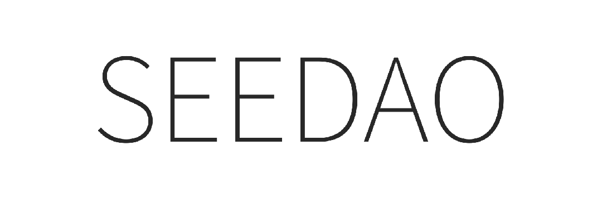

Hey，亲爱的SeeDAO成员/场地owner
近期，随着SeeDAO白皮书初稿已出，社区进入热烈的公开讨论和评议阶段。
我们清晰、深刻地感知到：
“我们完全有必要构建一个扎实的网络社会”
SeeDAO的愿景是成为一个连接100万Web3游民的数字城邦；
SeeDAO存在的意义是基于区块链构建一个以追求“好的生活”(即幸福) 为目的的社会，
它的具体形态是一个由统一的网络空间和分散在不同地域的物理节点所构成的数字城邦。
为此，诚挚欢迎你踊跃推荐牵线。无论是否是SeeDAO成员，协助牵线空间成功，我们会根据最终空间合作情况，给到积分奖励（10k~15k）。

【品牌支持】
赋能Seed底层权益，成为SeeDAO全球合作伙伴 活动内容支持（品牌自有的See U IRL + 外部联合活动） SeeDAO城市活动场优先选择权 SeeDAO品牌logo使用权 ……
【媒体宣发】
新媒体平台(公众号，小红书，播客&推特等)整体宣发，包含录入入 SeeU.Network 网站黄页 SeeDAO内部各个城市据点群宣发 ……

【社区共创支持】
由 SeeDAO 对外发布 1-5w 额度 Token 的悬赏，促进更多活动在此落地 SeeDAO成员为场地撰写一份探店专访，在 SeeDAO 相关媒体发布

【外联支持】
场地方组织举办活动，如若需要邀请嘉宾，可以联系 SeeDAO 外联小组寻找合适人选
服务于数字游民的共享生活空间和办公空间； 对Web3友好的城市公共文化空间（例如咖啡馆、书店等）； 对Web3友好的活动空间（例如办公室、画廊、美术馆、礼堂等）； 对Web3友好的村落或微型城市（可供更大规模的生活实验）。
成为SeeDAO的场地合作伙伴：获得官方宣传支持，包括海报、官网、公众号等 成为SeeDAO的本地network据点：与本地的优质内容分享者建立链接，成为众多参与者的长期据点 ……
内容来源：文倩
排版：Bo
审核: Ines